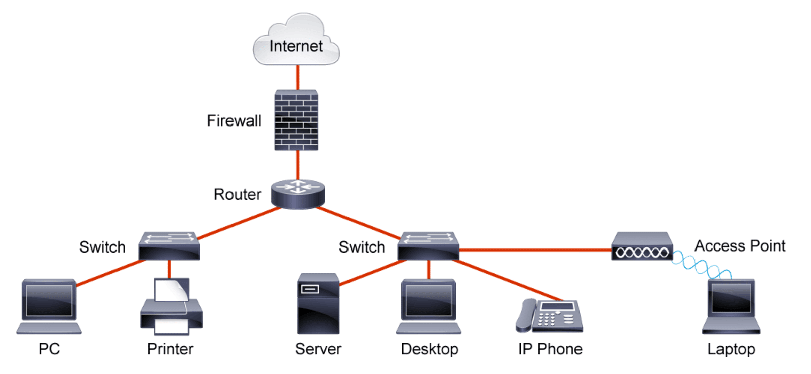

Définition d'un réseaux informatique
Un réseau informatique est un ensemble d'équipements reliés entre eux pour échanger des informations.
Par analogie avec un filet (un réseau est un « petit rets », c'est-à-dire un petit filet),
on appelle nœud l'extrémité d'une connexion, qui peut être une intersection de plusieurs connexions ou équipements un ordinateur, un routeur, un concentrateur, un commutateur.
Indépendamment de la technologie sous-jacente, on porte généralement une vue matricielle sur ce qu'est un réseau.
Un ordinateur est un système de traitement de l'information programmable
Un ordinateur est un système de traitement de l'information programmable tel que défini par Turing et qui fonctionne par la lecture séquentielle d'un ensemble d'instructions, organisées en programmes, qui lui font exécuter des opérations logiques et arithmétiques. Sa structure physique actuelle fait que toutes les opérations reposent sur la logique binaire et sur des nombres formés à partir de chiffres binaires.
Dès sa mise sous tension, un ordinateur exécute, l'une après l'autre, des instructions qui lui font lire, manipuler, puis réécrire un ensemble de données déterminées par une mémoire morte d'amorçage (Boot ROM, BIOS, UEFI, etc.). Des tests et des sauts conditionnels permettent de passer à l'instruction suivante et donc d'agir différemment en fonction des données ou des nécessités du moment ou de l'environnement. Les données à manipuler sont obtenues, soit par la lecture de mémoires, soit par la lecture d'information en provenance de périphériques internes ou externes (déplacement d'une souris, touche appuyée sur un clavier, température, vitesse, compression…). Une fois utilisés, ou manipulés, les résultats sont écrits, soit dans des mémoires, soit dans des composants qui peuvent transformer une valeur binaire en une action physique (écriture sur une imprimante ou sur un moniteur, accélération ou freinage d'un véhicule, changement de température d'un four…).
L'ordinateur peut aussi répondre à des interruptions qui lui permettent d’exécuter des programmes de réponses spécifiques à chacune, puis de reprendre l’exécution séquentielle du programme interrompu. Télécharger une image d'un ordinateur
Routeur
Un routeur est un équipement réseau informatique assurant le routage des paquets. Son rôle est de faire transiter des paquets d'une interface réseau vers une autre, au mieux, selon un ensemble de règles.
Il y a habituellement confusion entre routeur et relais, car dans les réseaux Ethernet les routeurs opèrent au niveau de la couche 3 du modèle OSI.
Un hub Ethernet ou concentrateur Ethernet
En utilisant un hub, chaque équipement attaché à celui-ci partage le même domaine de diffusion ainsi que le même domaine de collision. Comme dans tout segment de réseau Ethernet, une seule des machines connectées peut y transmettre à la fois. Dans le cas contraire, une collision se produit, les machines concernées doivent retransmettre leurs trames après avoir attendu un temps calculé aléatoirement par chaque émetteur.
Ce dispositif est un répéteur de données ne permettant pas de protection particulière des données et transmettant les trames à toutes les machines connectées par opposition au commutateur réseau (en anglais switch) qui dirige les données uniquement vers la machine destinataire. Ceci le rend vulnérable aux attaques par Analyseur de paquets. Il permet également d'étendre un réseau local (LAN) mais ne permet pas de le transformer en un réseau étendu (WAN).
Le commutateur réseau (en anglais switch)
Un commutateur réseau (en anglais switch), est un équipement qui relie plusieurs segments (câbles ou fibres) dans un réseau informatique et de télécommunication et qui permet de créer des circuits virtuels.
La commutation est un des deux modes de transport de trame au sein des réseaux informatiques et de communication, l'autre étant le routage.
Dans les réseaux locaux (LAN), il s'agit le plus souvent d'un boîtier disposant de plusieurs ports RJ45 (entre 4 et plusieurs centaines), il a donc la même apparence qu'un concentrateur (hub).
Il existe aussi des commutateurs pour tous les types de réseau en mode point à point comme pour les réseaux ATM, relais de trames, etc.
